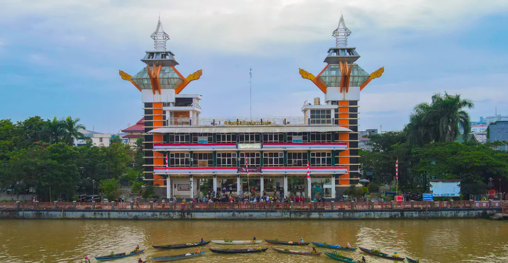

Daftar Destinasi

Sungai Martapura
Tempat wisata sungai indah di pusat kota.

Menara Pandang
Spot foto terbaik melihat kota dari atas.

Pulau Kembang
Tempat Wisata pulau kembang, melihat banyak monyet berekor panjang.

Patung Tugu Bekantan
Tugu Ikonik yang berada di Banjarmasin.